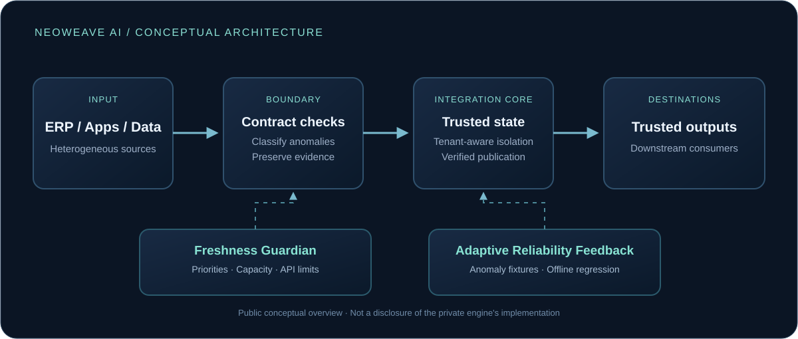

01 / DATA INTEGRITY
Verified synchronization
Protect trusted business state with contract-aware checks and coherent publication boundaries.
TRUST BEFORE SPEED
NeoWeave AI is an enterprise integration engine project designed to connect ERP systems, applications, and data sources while placing integrity, resilience, and data freshness at the center.
Active engineering project · Public architecture overview · Private implementation
THE PLATFORM
Real enterprise integrations fail in ways that simple API connectors do not anticipate. NeoWeave focuses on the hard cases: partial responses, uncertain outcomes, stale data, rate limits, and system boundaries.
Protect trusted business state with contract-aware checks and coherent publication boundaries.
Prioritize synchronization work based on data freshness, system capacity, and API constraints.
Transform anomalies into reproducible offline regression scenarios, with controlled validation.
Separate tenant and source contexts so one integration failure does not corrupt another's trusted data.
Treat uncertain writes, retries, and recovery as first-class engineering concerns.
Expose integration status, incidents, and reliability signals to help teams understand what changed and why.
HIGH-LEVEL ARCHITECTURE
A conceptual view of the platform's responsibilities, intentionally separate from the private implementation.

ENGINEERING PHILOSOPHY
An HTTP success is not proof of a valid business outcome.
Reliability feedback generates repeatable tests; it does not silently deploy self-written fixes.
Millions of records are a design ambition, not a claim of verified production throughput.
WHAT'S NEXT
NeoWeave AI is under active development. The engine's implementation remains private; this public showcase shares the engineering vision and architecture.